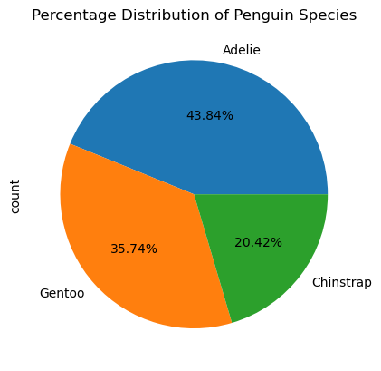

import plotly.io as pio
pio.renderers.default="iframe"Hello!
In this post, I’ll show you how to make a nice visualization of the famous “Palmer Penguins” dataset by using the Pandas, Matplotlib, and Seaborn packages in Python.
Load The Palmer Penguins Data Set
import pandas as pd
url = "https://raw.githubusercontent.com/pic16b-ucla/24W/main/datasets/palmer_penguins.csv"
penguins = pd.read_csv(url)Pandas is a powerful open-source library in Python used for data manipulation and analysis. It provides easy-to-use data structures and functions to work with structured data. Pandas is commonly used in data preprocessing tasks before feeding data into machine learning models.
# Drop rows with missing values in specific columns
penguins = penguins.dropna(subset = ["Body Mass (g)", "Sex"])
# Extract the first word of the "Species" column
penguins["Species"] = penguins["Species"].str.split().str.get(0)
# Filter out rows where "Sex" is not specified
penguins = penguins[penguins["Sex"] != "."]
# Selecting specific columns
cols = ["Species", "Island", "Sex", "Culmen Length (mm)", "Culmen Depth (mm)", "Flipper Length (mm)", "Body Mass (g)"]
penguins = penguins[cols]penguins.head()| Species | Island | Sex | Culmen Length (mm) | Culmen Depth (mm) | Flipper Length (mm) | Body Mass (g) | |
|---|---|---|---|---|---|---|---|
| 0 | Adelie | Torgersen | MALE | 39.1 | 18.7 | 181.0 | 3750.0 |
| 1 | Adelie | Torgersen | FEMALE | 39.5 | 17.4 | 186.0 | 3800.0 |
| 2 | Adelie | Torgersen | FEMALE | 40.3 | 18.0 | 195.0 | 3250.0 |
| 4 | Adelie | Torgersen | FEMALE | 36.7 | 19.3 | 193.0 | 3450.0 |
| 5 | Adelie | Torgersen | MALE | 39.3 | 20.6 | 190.0 | 3650.0 |
Have a general idea of the proportion of each species and the island they inhabit.
Matplotlib is a widely used Python library for creating static, interactive, and animated visualizations in Python. It provides a MATLAB-like interface and can generate plots, histograms, power spectra, bar charts, error charts, scatterplots, etc.
import matplotlib.pyplot as plt
# Count the occurrences of each species
species = penguins.Species.value_counts()
# Plotting the pie chart
species.plot(kind='pie', autopct="%.2f%%")
plt.title('Percentage Distribution of Penguin Species')
# Display the pie chart
plt.show()Text(0.5, 1.0, 'Percentage Distribution of Penguin Species')
Based on the pie chart, the Palmer Penguins data set predominantly consists of Adelie penguins, accounting for 43.84%, followed by Gentoo penguins at 35.74%, and finally, Chinstrap penguins at 20.42%.
# Count the occurrences of penguins on each island
island = penguins.Island.value_counts()
# Plotting the pie chart
island.plot(kind='pie', autopct="%.2f%%")
plt.title('Percentage Distribution of Penguins on Each Island')
# Display the pie chart
plt.show()Text(0.5, 1.0, 'Percentage Distribution of Penguin on Each Island')Based on the pie chart, the Palmer Penguins data set indicates that the majority of penguins inhabit Biscoe Island, comprising 48.95%, followed by Dream Island at 36.94%, and finally, Torgersen Island at 14.11%.
import seaborn as sns
# Set style for seaborn
sns.set(style="whitegrid")
# Create a figure with three subplots in the same line
fig, axes = plt.subplots(1, 3, figsize=(15, 5), sharey=True)
# Plot 1: Island = Biscoe
sns.countplot(x="Species", data=penguins[penguins['Island'] == 'Biscoe'], ax=axes[0])
axes[0].set_title("Biscoe Island")
# Plot 2: Island = Dream
sns.countplot(x="Species", data=penguins[penguins['Island'] == 'Dream'], ax=axes[1])
axes[1].set_title("Dream Island")
# Plot 3: Island = Torgersen
sns.countplot(x="Species", data=penguins[penguins['Island'] == 'Torgersen'], ax=axes[2])
axes[2].set_title("Torgersen Island")
# Set common y-label
axes[0].set_ylabel("Count")
plt.suptitle("Distribution of Penguin Species on Different Islands", y=1.05)
# Adjust layout
plt.tight_layout()
# Show the plot
plt.show()Based on the bar plot illustrating the distribution of each species on each island, Gentoo penguins are the predominant species on Biscoe Island, Chinstrap penguins dominate Dream Island, and Adelie penguins are the major species on Torgersen Island. However, it’s worth noting that Adelie penguins inhabit all three islands, with Dream Island having the highest count of Adelie, even though Torgersen Island exclusively has Adelie penguins.
Dive deep into the Culmen Length and Culmen Depth relationships
Plotly Express is a Python library that provides an easy-to-use interface for creating interactive visualizations. It is built on top of Plotly, a JavaScript library for creating interactive plots. Plotly Express offers a wide range of chart types and customization options.
px.scatter(): This function creates a scatter plot using Plotly Express. We specify the DataFrame penguins and map the columns “Culmen Length (mm)” to the x-axis and “Culmen Depth (mm)” to the y-axis.color="Species": This parameter colors the points based on the species of the penguins.hover_name="Species": This parameter determines what appears when hovering over each point. Here, we display the species name.hover_data=["Island", "Sex"]: This parameter adds additional information to be displayed when hovering over each point. We include the island and sex of the penguins.size="Body Mass (g)": This parameter sizes the points based on the body mass of the penguins.size_max=8: This parameter sets the maximum size of the points.width=500, height=300: These parameters set the width and height of the plot.opacity=0.5: This parameter sets the opacity of the points to 0.5, making them slightly transparent.
import plotly
from plotly import express as px
fig = px.scatter(data_frame = penguins,
x = "Culmen Length (mm)",
y = "Culmen Depth (mm)",
color = "Species",
hover_name = "Species",
hover_data = ["Island", "Sex"],
size = "Body Mass (g)",
size_max = 8,
width = 500,
height = 300,
opacity = 0.5
)
#reduce whitespace
fig.update_layout(margin={"r":0, "t":0, "l":0, "b":0})
# show the plot
fig.show()We now observe a general pattern where Adelie penguins tend to exhibit shorter culmen length but longer culmen depth compared to the other two species. Chinstrap penguins typically fall in the middle for both culmen length and culmen depth when compared to the other two species. On the other hand, Gentoo penguins tend to have greater culmen length and shorter culmen depth than the other two species. In summary, across all species, culmen length tends to be greater than culmen depth.
Now, let’s explore the factors that may contribute to the variation in culmen depth and culmen length among different species.
First let’s do some data preprocessing:
The line of code penguins_encoded = pd.get_dummies(penguins, columns=["Species", "Island", "Sex"], drop_first=True) is used to convert categorical values into numerical values through a process called one-hot encoding.
Explanation:
Categorical Variables: Categorical variables are variables that can take on a limited, and usually fixed, number of possible values. In the DataFrame
penguins, the columns “Species”, “Island”, and “Sex” are categorical variables because they represent categories rather than numerical quantities.One-Hot Encoding: One-hot encoding is a technique used to convert categorical variables into a numerical format that can be provided as input to machine learning algorithms. In this encoding scheme, each category is represented as a binary vector, where each element of the vector corresponds to one category. The element representing the category of a particular observation is set to 1, while all other elements are set to 0.
pd.get_dummies() Function: The
pd.get_dummies()function provided by the Pandas library is used to perform one-hot encoding. It creates a new DataFrame where each categorical variable specified in thecolumnsparameter is converted into one-hot encoded columns.drop_first=True: The
drop_firstparameter is set toTrueto avoid multicollinearity in the dataset. Whendrop_first=True, the first category for each variable is dropped after encoding, leaving onlyn-1binary columns forncategories. This prevents redundancy in the data, as the dropped category can be inferred from the other binary columns. It also helps to avoid issues such as the “dummy variable trap” in regression analysis.Output: After executing this line of code,
penguins_encodedwill contain the original columns frompenguins, along with new binary columns representing the one-hot encoded categorical variables. Each binary column corresponds to a unique category within the original categorical variable. The dataset is now in a format suitable for many machine learning algorithms that require numerical input.
# convert categorical values into numerical values
penguins_encoded = pd.get_dummies(penguins, columns=["Species", "Island", "Sex"], drop_first=True)Since we want to find out each variable’s relation with the Culmen Length and Culmen Depth, the following code will add 2 extra columns for Species_Adelie and Island_Biscoe since they would not be included in the data frame due to get_dummies would neglact these 2 columns and replace it with other columns being False and False.
penguins_encoded['Species_Adelie'] = ~penguins_encoded['Species_Chinstrap'] & ~penguins_encoded['Species_Gentoo']penguins_encoded['Island_Biscoe'] = ~penguins_encoded['Island_Dream'] & ~penguins_encoded['Island_Torgersen']penguins_encoded| Culmen Length (mm) | Culmen Depth (mm) | Flipper Length (mm) | Body Mass (g) | Species_Chinstrap | Species_Gentoo | Island_Dream | Island_Torgersen | Sex_MALE | Species_Adelie | Island_Biscoe | |
|---|---|---|---|---|---|---|---|---|---|---|---|
| 0 | 39.1 | 18.7 | 181.0 | 3750.0 | False | False | False | True | True | True | False |
| 1 | 39.5 | 17.4 | 186.0 | 3800.0 | False | False | False | True | False | True | False |
| 2 | 40.3 | 18.0 | 195.0 | 3250.0 | False | False | False | True | False | True | False |
| 4 | 36.7 | 19.3 | 193.0 | 3450.0 | False | False | False | True | False | True | False |
| 5 | 39.3 | 20.6 | 190.0 | 3650.0 | False | False | False | True | True | True | False |
| ... | ... | ... | ... | ... | ... | ... | ... | ... | ... | ... | ... |
| 338 | 47.2 | 13.7 | 214.0 | 4925.0 | False | True | False | False | False | False | True |
| 340 | 46.8 | 14.3 | 215.0 | 4850.0 | False | True | False | False | False | False | True |
| 341 | 50.4 | 15.7 | 222.0 | 5750.0 | False | True | False | False | True | False | True |
| 342 | 45.2 | 14.8 | 212.0 | 5200.0 | False | True | False | False | False | False | True |
| 343 | 49.9 | 16.1 | 213.0 | 5400.0 | False | True | False | False | True | False | True |
333 rows × 11 columns
# Compute the correlation matrix
correlation_matrix = penguins_encoded.corr()
# Create a heatmap
plt.figure(figsize=(10, 8))
sns.heatmap(correlation_matrix, annot=True, cmap="coolwarm", fmt=".2f", linewidths=.5)
# Set plot title
plt.title("Correlation Heatmap")
# Show the plot
plt.show()Based on the plot, it appears that flipper length has a significant effect on culmen length, with a correlation of 0.65. Following this, body mass shows a correlation of 0.59. This aligns with the earlier visualization, indicating that Adelie tends to have a shorter length with a negative coefficient of -0.84. In contrast, Gentoo tends to have a longer culmen length with a positive coefficient of 0.49. The same trend applies to Chinstrap, with a positive coefficient similar to Gentoo.
Concerning culmen depth, Adelie tends to have a longer culmen depth with the greatest positive coefficient of 0.53. Dream Island positively affects culmen depth with a coefficient of 0.46, which makes sense as Adelie and Chinstrap occupy the island. Gentoo, on the other hand, exhibits the greatest negative effect on culmen depth, consistent with the fact that Gentoo inhabits Biscoe Island.